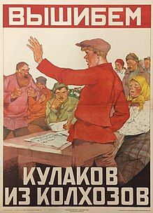
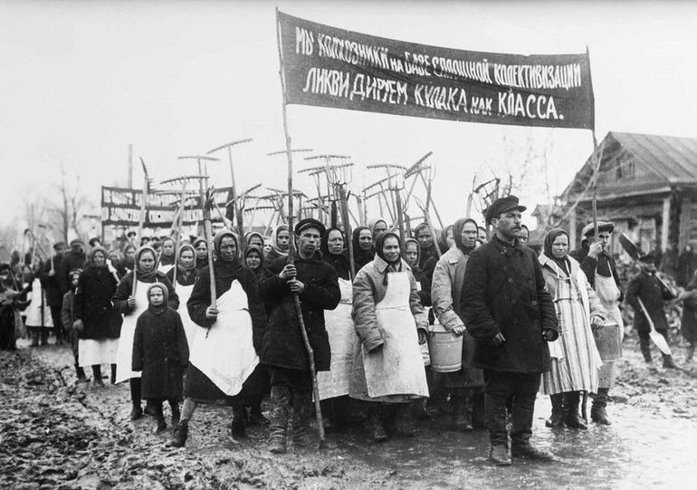
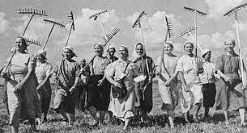
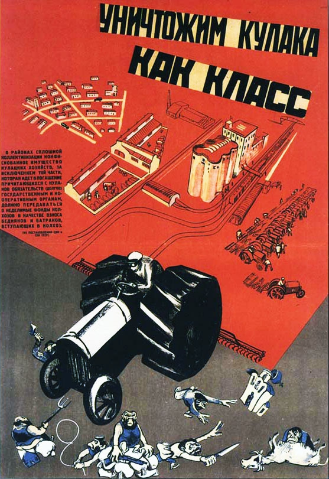

Колективіза́ція сільського господарства в СРСР — створення великих колективних господарств на основі селянських дворів. Передбачалося, що результатом колективізації стане ріст виробництва сільськогосподарської продукції на 150 %. Колективізація мала охопити майже всі селянські господарства, ліквідувавши «шкідливий буржуазний вплив» приватної власності.

Мета колективізації:
Метою було перетворення всієї робочої сили сіл, а також міст, на робітників державних підприємств. Це давало змогу встановити повний економічний контроль влади над громадянами, поширити її політичне панування на економічно самостійне до цього селянство, тобто на практиці реалізувати ідею диктатури влади над усією країною, де селяни складали більш ніж 85 % населення. Було відомо, що реалізація плану зустріне певний опір, особливо з боку селян, яких мали позбавити землі

Найрадикальніше колективізація відбувалася у сільській місцевості, де вона була війною режиму проти селянства. Історики називають колективізацію однією з причин Голодомору 1932—1933 років в Україні.
Шлях суспільства до соціалізму більшовики пов'язували із переведенням селянства на рейки великого виробництва. Ідея соціалістичного перетворення сільського господарства пройшла досить тривалу еволюцію. У 1917—1920 рр. виникли перші колгоспи. Це було результатом об'єднання селянських господарств за активного сприяння радянської влади.
Засоби колективізації:
Основними засобами колективізації населення були:
• «Революція згори»: силовий тиск та залякування селян;
• примусова організація колгоспів;
• ліквідація заможних господарів (розкуркулення);
• заборона залишати село (по суті повернення до панщини)
Колгосп – колективне господарство; форма колективного господарства, що набула поширення в СРСР після проведення колективізації. Землі, реманент, техніка колгоспу з формальної точки зору були власністю тих, хто його утворив. У власності селян залишалася лише присадибна ділянка, птиця, дрібна худоба, корови.

Куркуль (куркульство) – поширена назва заможних селян, господарів в Україні. Ярлик, який радянська влада навішувала противникам колгоспного будівництва на селі. Передбачалося знищити як класового ворога. Офіційна ідеологія зображувала куркулів як лютих ворогів радянської влади, жорстоких експлуататорів.
Розкуркулення – кампанія експропріації селянських господарств у 1930-ті рр., складова частина примусової колективізації. Здійснювалася на основі постанови ЦК ВКП(б) від 30 січня 1930 р. «Про заходи у справі куркульських господарств у районах суцільної колективізації». Формально спрямована проти найзаможніших селян (в Україні їх було 1,5 %). Поряд із примусовою колективізацією розкуркулення стало передумовою занепаду сільського господарства й голодомору.

Наслідки колективізації:
• Держава отримала хліб і вже не залежала від індивідуальних господарств.
• Держава отримала засоби для індустріалізації
• Завершилося одержавлення економіки
• Збереглося присадибне господарство, як підмога селянству
• Занепад індивідуального сільського господарства
• Відчуження засобів праці та її результатів від самого виробника
• Голодомор 1932-33рр.
• Формування історично нової системи господарювання, що заснована на примусовій праці, прикріпленні до колгоспу (радгоспу), натуральній платі оплати.
• Село втратило третину робочої сили